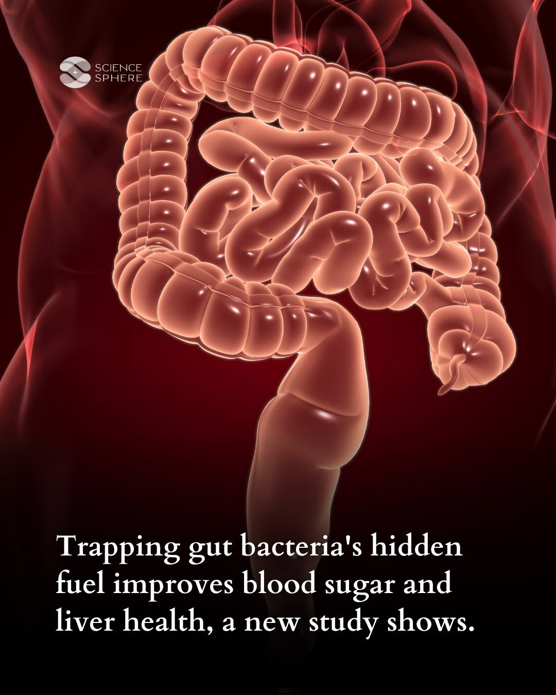

In a groundbreaking study, researchers have uncovered a surprising culprit behind poor blood sugar control and fatty liver disease: a little-known molecule called D-lactate, produced by gut bacteria.
Unlike L-lactate (made by muscles during exercise), D-lactate is generated primarily by gut microbes. The study, published in Cell Metabolism, shows that in both obese mice and humans, elevated D-lactate enters the bloodstream and fuels the liver to overproduce glucose and fat—worsening insulin resistance and liver damage.
To counter this, scientists developed a "gut substrate trap"—a biodegradable polymer that binds D-lactate inside the gut, preventing it from entering the body. The result? Mice showed dramatic improvements in blood sugar, reduced insulin resistance, and less liver inflammation and fibrosis—without any changes to diet or weight.
This marks a novel therapeutic strategy: instead of targeting hormones or liver cells directly, it intercepts harmful microbial metabolites before they enter circulation.
Follow Science Sphere for regular scientific updates
RESEARCH PAPER 📄
Gut substrate trap of D-lactate from microbiota improves blood glucose and fatty liver disease in obese mice, Cell Metabolism (2025)
